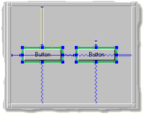

Now that you have reviewed some of the basic concepts and vocabulary
regarding spring solutions and connections in the
Connections Tutorial: Overview, this section
explains in more detail how to use connections when building your own
spring solutions for your application.
This portion of the tutorial covers:
An item that has natural-sized struts automatically resizes itself according
to its contents. Natural-sizing can be specified for an item's inside height
and inside width.
To create a natural-sized strut, do the following:
- Select the item in the Dialog Editor.
- Select the desired connection. You can do this in the Dialog Editor
or the Spring Editor.
- Select the Connection:Natural Length menu option.
or
In the Spring Editor, click on the Natural Sized button.
The strut changes to green to signify a natural length strut.
To specify that an item is always centered in a dialog, even when it
is resized, set all of the item's outer connections to be
springs. By default, an item has the top and left connections as struts and
the bottom and right connections as springs.
To change a strut to a spring, do any one of the following:
- Double-click on the strut. To change it back to a strut, double-click
on it again. You can also double click the corresponding connection
displayed in the Spring Editor.
or
Select the Connection:Spring menu option.
or
In the Spring Editor, click on the Spring toggle. This changes
the connection to a Fixed Base + Spring. It retains the
specified size, but can also expand to fill the available space.
The following shows a button that is centered from left to right and from
top to bottom:
Whenever the dialog resizes, the button always remains in the center.
A chain is a series of items connected to each other, and to opposite sides
of a dialog (or container). Chains can be horizontal or vertical. Chains are
useful for specifying that several items interact as a group during resize
events. Each chain must contain at least one spring; without a spring in the
chain there is no "give" between the items when the dialog resizes.
You can connect individual items together in a chain, or you can
select several items in an editor and chain them according to
available options from the Connection:Chain menu.
To connect two items together:
- Select both items in the Dialog Editor.
- Select one of the chaining methods available from the
Connections:Chain menu:
- Bottoms To Tops
- Left Sides
- Right Sides
- Left and Right Sides
- Lefts To Rights
- Top Sides
- Bottom Sides
- Bottom and Top Sides
You can also manually drag one connection and attach it to another dialog,
as the following graphic illustrates:

You can align items horizontally or vertically in a dialog. To align items
in the Dialog Editor, select all of the items you want to align in the
Dialog Editor. Then chose an option from the Item:Align menu, or
select one of the align buttons on the toolbar.

The following examples illustrate alignment options.
Select the items.

Item:Align:Left
Item:Align:Horizontal Centers

Item:Align:Right

Item:Align:Top
Item:Align:Vertical Centers
Item:Align:Bottom
You may want to experiment with many of the various connections that
make up a dialog's spring solution.
[Return to Top]